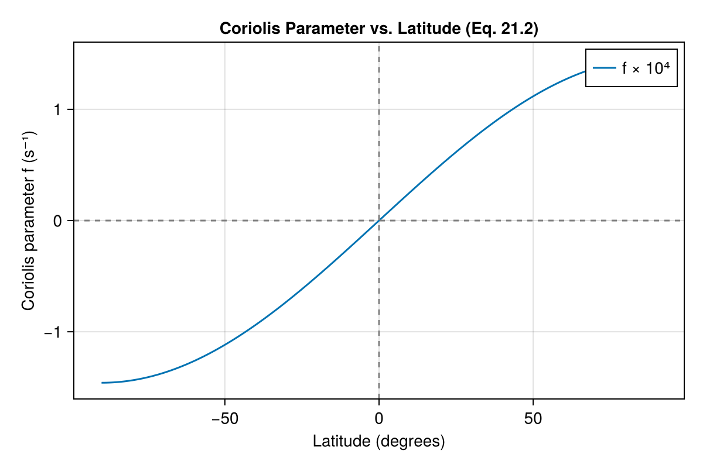
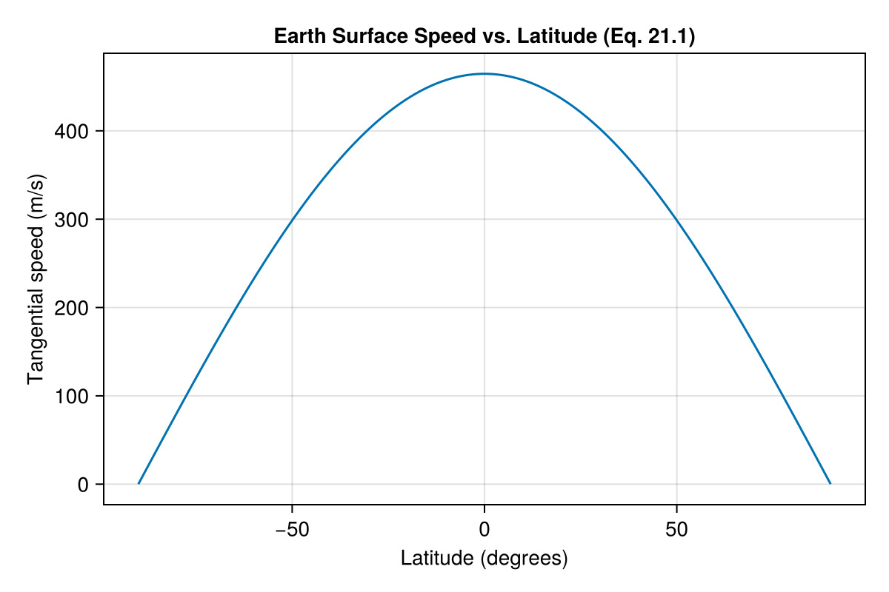
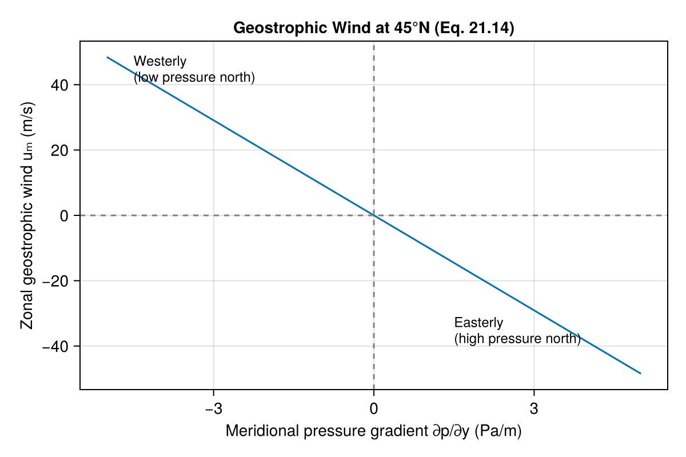
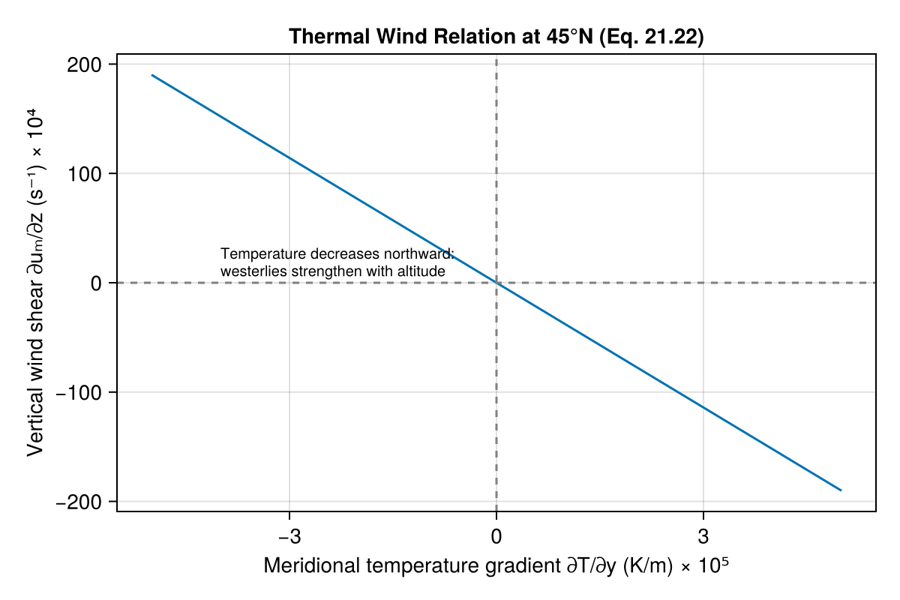

General Circulation of the Atmosphere
Overview
The GeneralCirculation component implements fundamental equations governing large-scale atmospheric motion, as described in Chapter 21 of Seinfeld & Pandis (2006). These equations are essential for understanding how the global atmosphere transports heat, moisture, and pollutants.
The component calculates:
- Coriolis parameter: The latitude-dependent parameter quantifying Earth's rotational effects
- Geostrophic wind: Wind resulting from balance between pressure gradient and Coriolis forces
- Thermal wind: Vertical wind shear due to horizontal temperature gradients
- Tangential speed: Speed of Earth's surface at any latitude
Reference: Seinfeld, J. H., & Pandis, S. N. (2006). Atmospheric Chemistry and Physics: From Air Pollution to Climate Change (2nd ed.). John Wiley & Sons, Inc. Chapter 21, pp. 980-1002.
AtmosphericDynamics.GeneralCirculation — Function
GeneralCirculation(; name = :GeneralCirculation)Return a ModelingToolkit.System implementing equations for the general circulation of the atmosphere, including the Coriolis parameter, geostrophic wind, and thermal wind relations.
These equations are from Chapter 21 of Seinfeld & Pandis (2006), "Atmospheric Chemistry and Physics: From Air Pollution to Climate Change", 2nd Edition, John Wiley & Sons, pp. 980-1002.
The component calculates:
- Coriolis parameter (f): The latitude-dependent parameter that quantifies the Coriolis force magnitude (Eq. 21.2)
- Geostrophic wind components (ug, vg): Wind speeds resulting from balance between pressure gradient force and Coriolis force (Eq. 21.14)
- Tangential speed (v_tan): Speed of a point on Earth's surface due to rotation (Eq. 21.1)
- Thermal wind shear (dugdz, dvgdz): Vertical gradients of geostrophic wind due to horizontal temperature gradients (Eq. 21.22)
The geostrophic approximation is valid above approximately 500 m altitude where friction with the Earth's surface is negligible. Near the equator (|φ| < ~5°), the Coriolis parameter approaches zero and the geostrophic approximation breaks down.
Example
using ModelingToolkit
using AtmosphericDynamics
sys = GeneralCirculation()
sys_simplified = mtkcompile(sys)
# Calculate Coriolis parameter and geostrophic wind at 45°N
# with a meridional pressure gradient of -0.01 Pa/m
prob = ODEProblem(sys_simplified,
[],
(0.0, 1.0),
[
sys_simplified.lat => deg2rad(45.0),
sys_simplified.dp_dy => -0.01,
sys_simplified.dp_dx => 0.0,
sys_simplified.rho => 1.0
])
sol = solve(prob)
# Access the Coriolis parameter
f = sol[sys_simplified.f][1] # ≈ 1.03e-4 s⁻¹
# Access geostrophic wind
u_g = sol[sys_simplified.u_g][1] # Eastward geostrophic windReferences
- Seinfeld, J. H., & Pandis, S. N. (2006). Atmospheric Chemistry and Physics: From Air Pollution to Climate Change (2nd ed.). John Wiley & Sons, Inc. Chapter 21.
Implementation
The equations implemented in this component are primarily diagnostic (algebraic) relations that describe the steady-state behavior of large-scale atmospheric flow.
State Variables
using DataFrames, ModelingToolkit, Symbolics, DynamicQuantities
using AtmosphericDynamics
sys = GeneralCirculation()
vars = unknowns(sys)
DataFrame(
:Name => [string(Symbolics.tosymbol(v, escape = false)) for v in vars],
:Units => [string(dimension(ModelingToolkit.get_unit(v))) for v in vars],
:Description => [ModelingToolkit.getdescription(v) for v in vars]
)| Row | Name | Units | Description |
|---|---|---|---|
| String | String | String | |
| 1 | f | s⁻¹ | Coriolis parameter |
| 2 | v_tan | m s⁻¹ | Tangential speed at latitude due to Earth rotation |
| 3 | u_g | m s⁻¹ | Zonal (eastward) geostrophic wind component |
| 4 | v_g | m s⁻¹ | Meridional (northward) geostrophic wind component |
| 5 | du_g_dz | s⁻¹ | Thermal wind: vertical gradient of zonal geostrophic wind |
| 6 | dv_g_dz | s⁻¹ | Thermal wind: vertical gradient of meridional geostrophic wind |
Parameters
params = parameters(sys)
DataFrame(
:Name => [string(Symbolics.tosymbol(p, escape = false)) for p in params],
:Units => [string(dimension(ModelingToolkit.get_unit(p))) for p in params],
:Description => [ModelingToolkit.getdescription(p) for p in params]
)| Row | Name | Units | Description |
|---|---|---|---|
| String | String | String | |
| 1 | dp_dy | m⁻² kg s⁻² | Pressure gradient in y (northward) direction |
| 2 | dp_dx | m⁻² kg s⁻² | Pressure gradient in x (eastward) direction |
| 3 | lat | Latitude | |
| 4 | dT_dy | m⁻¹ K | Temperature gradient in y direction at constant pressure |
| 5 | g | m s⁻² | Gravitational acceleration |
| 6 | Omega | s⁻¹ | Earth's angular velocity |
| 7 | rho | m⁻³ kg | Air density |
| 8 | dT_dx | m⁻¹ K | Temperature gradient in x direction at constant pressure |
| 9 | T | K | Air temperature |
| 10 | R_earth | m | Earth's mean radius |
Equations
The component implements the following equations from Chapter 21:
eqs = equations(sys)\[ \begin{align} f\left( t \right) &= 2 \mathtt{Omega} \sin\left( \mathtt{lat} \right) \\ \mathtt{v\_tan}\left( t \right) &= \mathtt{Omega} \mathtt{R\_earth} \cos\left( \mathtt{lat} \right) \\ \mathtt{u\_g}\left( t \right) &= \frac{ - \mathtt{dp\_dy}}{\mathtt{rho} f\left( t \right)} \\ \mathtt{v\_g}\left( t \right) &= \frac{\mathtt{dp\_dx}}{\mathtt{rho} f\left( t \right)} \\ \mathtt{du\_g\_dz}\left( t \right) &= - \mathtt{dT\_dy} \frac{g}{T f\left( t \right)} \\ \mathtt{dv\_g\_dz}\left( t \right) &= \frac{\mathtt{dT\_dx} g}{T f\left( t \right)} \end{align} \]
Analysis
Coriolis Parameter (Eq. 21.2)
The Coriolis parameter $f = 2\Omega \sin\phi$ varies with latitude, being zero at the equator and maximum at the poles. This variation profoundly influences atmospheric circulation.
using ModelingToolkit: mtkcompile
using OrdinaryDiffEqDefault: solve
using CairoMakie
sys = GeneralCirculation()
sys_c = mtkcompile(sys)
# Calculate Coriolis parameter at different latitudes
lats = range(-90, 90, length = 181)
f_values = Float64[]
for lat_deg in lats
lat_rad = deg2rad(lat_deg)
prob = ODEProblem(sys_c, Dict(), (0.0, 1.0), Dict(sys_c.lat => lat_rad))
sol = solve(prob, saveat = [0.0])
push!(f_values, sol[sys_c.f][1])
end
fig = Figure(size = (600, 400))
ax = Axis(fig[1, 1],
xlabel = "Latitude (degrees)",
ylabel = "Coriolis parameter f (s⁻¹)",
title = "Coriolis Parameter vs. Latitude (Eq. 21.2)"
)
lines!(ax, lats, f_values .* 1e4, label = "f × 10⁴")
hlines!(ax, [0], color = :gray, linestyle = :dash)
vlines!(ax, [0], color = :gray, linestyle = :dash)
axislegend(ax)
fig
Tangential Speed (Eq. 21.1)
The tangential speed $v = \Omega R \cos\phi$ represents how fast a point on Earth's surface moves due to rotation. It is maximum at the equator (~465 m/s) and zero at the poles.
v_tan_values = Float64[]
for lat_deg in lats
lat_rad = deg2rad(lat_deg)
prob = ODEProblem(sys_c, Dict(), (0.0, 1.0), Dict(sys_c.lat => lat_rad))
sol = solve(prob, saveat = [0.0])
push!(v_tan_values, sol[sys_c.v_tan][1])
end
fig = Figure(size = (600, 400))
ax = Axis(fig[1, 1],
xlabel = "Latitude (degrees)",
ylabel = "Tangential speed (m/s)",
title = "Earth Surface Speed vs. Latitude (Eq. 21.1)"
)
lines!(ax, lats, v_tan_values)
fig
Geostrophic Wind (Eq. 21.14)
The geostrophic wind represents the balance between the pressure gradient force and the Coriolis force. In the Northern Hemisphere, the geostrophic wind blows with low pressure on its left (Buys Ballot's Law).
# Calculate geostrophic wind for various pressure gradients at 45°N
lat_45N = deg2rad(45.0)
dp_dy_values = range(-0.005, 0.005, length = 101) # Pa/m
u_g_values = Float64[]
for dp_dy in dp_dy_values
prob = ODEProblem(sys_c,
Dict(),
(0.0, 1.0),
Dict(
sys_c.lat => lat_45N,
sys_c.dp_dy => dp_dy,
sys_c.dp_dx => 0.0,
sys_c.rho => 1.0
))
sol = solve(prob, saveat = [0.0])
push!(u_g_values, sol[sys_c.u_g][1])
end
fig = Figure(size = (600, 400))
ax = Axis(fig[1, 1],
xlabel = "Meridional pressure gradient ∂p/∂y (Pa/m)",
ylabel = "Zonal geostrophic wind uₘ (m/s)",
title = "Geostrophic Wind at 45°N (Eq. 21.14)"
)
lines!(ax, dp_dy_values .* 1000, u_g_values)
hlines!(ax, [0], color = :gray, linestyle = :dash)
vlines!(ax, [0], color = :gray, linestyle = :dash)
text!(ax, -4.5, 40, text = "Westerly\n(low pressure north)", fontsize = 12)
text!(ax, 1.5, -40, text = "Easterly\n(high pressure north)", fontsize = 12)
fig
Thermal Wind (Eq. 21.22)
The thermal wind relation links the vertical shear of the geostrophic wind to horizontal temperature gradients. When temperature decreases northward (typical in the Northern Hemisphere), westerly winds increase with altitude.
# Calculate thermal wind shear for various temperature gradients
T = 250.0 # K (typical mid-troposphere temperature)
dT_dy_values = range(-5e-5, 5e-5, length = 101) # K/m
du_g_dz_values = Float64[]
for dT_dy in dT_dy_values
prob = ODEProblem(sys_c, Dict(), (0.0, 1.0),
Dict(
sys_c.lat => lat_45N,
sys_c.dT_dy => dT_dy,
sys_c.dT_dx => 0.0,
sys_c.T => T
))
sol = solve(prob, saveat = [0.0])
push!(du_g_dz_values, sol[sys_c.du_g_dz][1])
end
fig = Figure(size = (600, 400))
ax = Axis(fig[1, 1],
xlabel = "Meridional temperature gradient ∂T/∂y (K/m) × 10⁵",
ylabel = "Vertical wind shear ∂uₘ/∂z (s⁻¹) × 10⁴",
title = "Thermal Wind Relation at 45°N (Eq. 21.22)"
)
lines!(ax, dT_dy_values .* 1e5, du_g_dz_values .* 1e4)
hlines!(ax, [0], color = :gray, linestyle = :dash)
vlines!(ax, [0], color = :gray, linestyle = :dash)
text!(ax, -4, 3,
text = "Temperature decreases northward:\nwesterlies strengthen with altitude",
fontsize = 10)
fig
Limitations
Geostrophic approximation: Valid only above the planetary boundary layer (~500 m) where friction is negligible, and away from the equator where the Coriolis parameter approaches zero.
Steady-state assumption: These are diagnostic equations that describe equilibrium conditions, not the transient approach to equilibrium.
Horizontal scale: The geostrophic approximation is valid for synoptic-scale motions (length scales ~1000 km, time scales ~1 day).
Equatorial singularity: As latitude approaches zero, the Coriolis parameter approaches zero, causing the geostrophic wind equations to become singular.